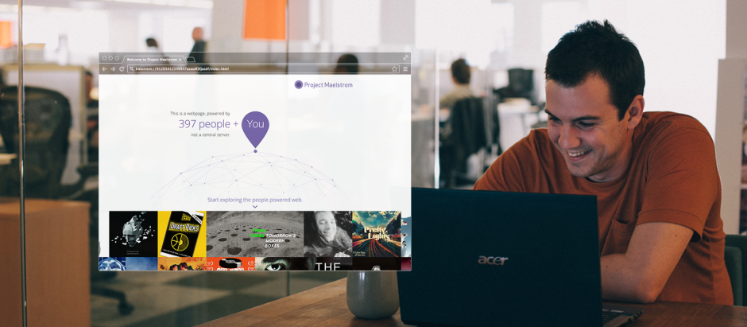
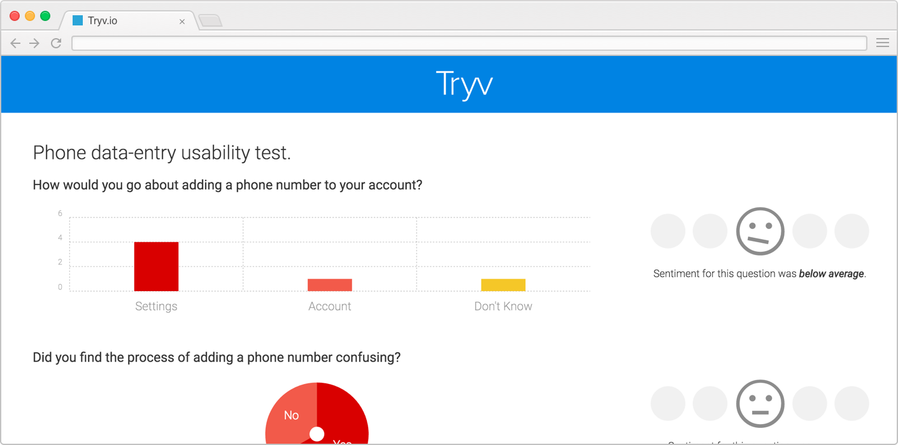
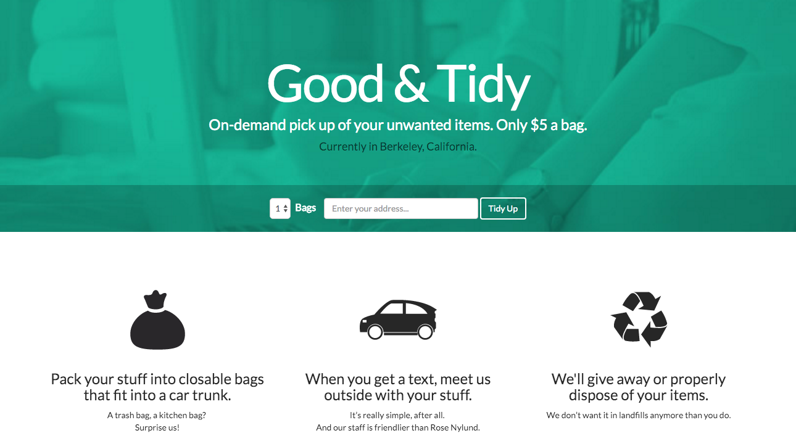

When I joined BitTorrent there the idea of the next generation torrent client being a web browser was on that had been tossed around for years. I was given the task of developing a startegy that would get us to MVP and prove the potential of the technology. There were three key goals, the first being to ensure that a sustainable business model existed and the second to create a vision that would leverage our company's core strengths but provide new use cases for the technology on the web. The third goal was to prove that the experience of torrent consumption in a web browser was one that current users would not only adopt, but prefer.
As a team we landed on a very simple mission that would prove to be very effective in the community as well as the press, we wanted to leverage torrent technology to build a truly distributed version of the web, one that can't be censored and one that was not reliant on third party infrastructure. With this vision to guide us, a go to market strategy was created and we were able to take this idea to market in 8 months with positive signals from the press and users and later enter Public Beta with continued success.
I enjoy shipping products, engaging with customers and understanding new markets. As such I've had several side projects with friends over the years and I'd love to focus quickly on the latest two in order to provide a quick summary.

We’re building tools that make sure research more accessible. While machine learning can’t solve every problem, it’s perfectly adept at targeting well-defined areas such as user research analysis to solve real problems for companies. We’re not worried about building the next screen sharing tool, we’re focused on how to analyze and organize the data from users that’s currently going to waste.
In development, working with reference customers to gain more insight into current pain points and ensure that we are focused on those.

1-800-GOT-JUNK, but with 1) on-demand pickup versus appointment slots and 2) car-trunk-sized parcels at $5/bag (such as Goodwill bags) vs. minimum $100+ charges for large items. We guaranteed responsible disposal/recycling/donation.
We seeded interest through tech press, made the front page of Hacker News, and serviced customers over two weekends.